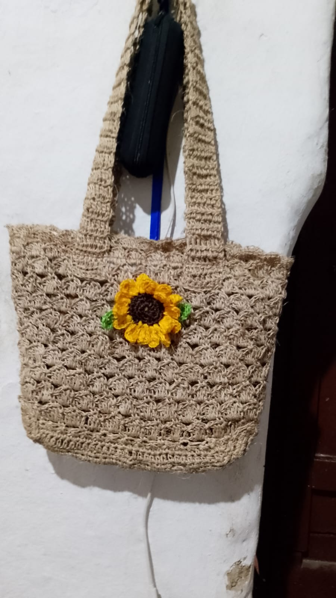
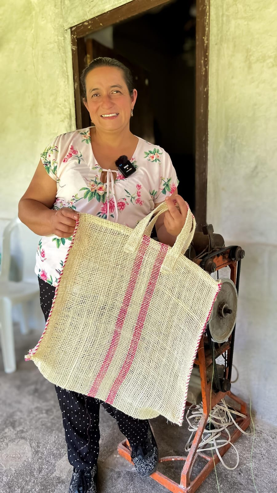

Eco-friendly Bags
Hand-woven with 100% natural fique fiber. Durable designs that blend contemporary fashion with weaving techniques inherited from our grandparents.
View Catalog
Peeled Corn Arepas
Our traditional recipe with pork rinds. Selected corn cooked over a wood fire to guarantee that authentic flavor that represents Santander's gastronomy.
Order Now
Fique Threads
Small details carrying great traditions. Keychains and mini-bags woven with vibrant colors that reflect the biodiversity of our land.
View Details
Multi-purpose Baskets
Functional pieces for the home. Ideal for organization or decoration, crafted with basketry techniques that guarantee strength and natural beauty.
Customize